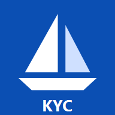

Use of this application is at your own risk. The developer makes no warranties
and accepts no liability for course errors, race results, or any damages whatsoever arising from
use of this application.
This app may record anonymous usage and, while GPS is on, basic sailing data
(speed, course, position) to help improve it.

Pro Race Ready!
By Raju Venkatraman•646.300.2466
Race Course Headings
1 · Course type
2 · Laps
3 · First mark (wind direction)
Custom race · enter marks in order
Decimal degrees, e.g. 40.4695 and -74.2065 (minus = S/W).
Leg
From → To
Heading
Dist nm
To Position
—GPS off
SOG
—
knots
COG
—
° magnetic
Start line & timer ▾
Ping the start-line end(s). Enter the wind (below) to see the favored end.
5:00
min
Next mark: —▾
°M
Brg to mark
—
°M
Dist to go
—
nm
Leg heading
—
°M
—
Race timer ▾
0:00
GPS is off. Seeing your boat needs GPS on and being near the course.
Tap Start GPS (top-right).
Away from the course. GPS is on; your boat will appear on the diagram once
you're near the marks. Live position is in the data above.
Position—
Boat shows as a green dot with a heading arrow; your track trails behind.
The magenta dotted line is the most efficient
path to the next mark for the entered wind — with a tack (T) when beating or a gybe
(G) when running. The faint dashed lines from the mark are
its laylines — once you reach one, you can lay the mark without pointing higher. Set the wind
above for these to appear.
Pinch with two fingers to zoom the map; drag to pan (one finger once zoomed in).
Tap Whole course to reset.
The teal dashed line is your pinged start line;
the green end is the favored (more upwind) end.